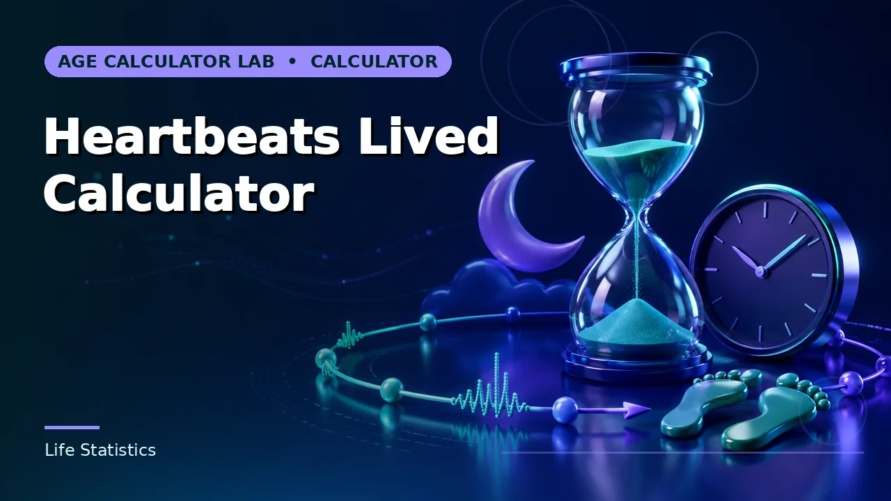

Quick answer
Ten beats per minute changes a lifetime total by hundreds of millions. Always publish the assumed rate beside the number.
The arithmetic and its sensitivity
Elapsed days multiplied by 1,440 gives lifetime minutes; multiplied by an average heart rate gives total beats. At 31 years and a rate of 70, that is around 1.17 billion.
Change the rate to 80 and the total rises to about 1.34 billion — a difference of 167 million beats from a single assumption. That sensitivity is the most important property of the calculation and the reason the rate must always be visible.
Use this guide with the right tool: Open the Heartbeats Lived Calculator for estimated lifetime heartbeats from age interval and average beats per minute. If the question shifts, compare it with the Age in Minutes Calculator or the Age in Days Calculator.
Your resting rate is not your average
A resting measurement is the lowest part of your daily range. Real heart rate rises with movement, digestion, stress, temperature and illness, and falls during deep sleep. A daily average sits meaningfully above a resting figure for most people.
It also changes across a lifetime. Infants run well above 100 at rest; the rate falls steeply through childhood and settles in adulthood. Applying an adult resting figure across a whole life understates the early years substantially.
The rate-of-living idea
There is a long-standing observation that across mammal species, smaller animals have faster heart rates and shorter lives, and total lifetime heartbeats land in a broadly similar range — often quoted around a billion. It is a genuinely interesting pattern.
It is also frequently over-read. Humans are a clear outlier, living far longer than the pattern predicts, and within a species the relationship does not hold in the way the phrasing suggests. A low resting heart rate in a fit person reflects an efficient heart, not a fixed allocation being spent slowly.
Using it well
This is a scale exercise. A billion is difficult to picture, and finding that your heart has done it makes the number concrete. That is a legitimate and worthwhile use.
What it cannot support is any claim about your health or your remaining lifespan. If you are interested in your heart rate for health reasons, a measured resting rate discussed with a clinician is the useful thing; a multiplication is not.
Worked example
At 11,594 days and 70 beats per minute, the total is about 1.17 billion, but 60 gives 1.00 billion and 80 gives 1.34 billion, so the assumed rate drives the answer. Try your own days lived and a realistic average rate, and quote a range.
Checking the scale of the result
The worked example produces a figure past a billion, and numbers that size are hard to sanity-check directly. Anchors help. At an average of 70 beats per minute, a heart beats 100,800 times a day and about 36.8 million times a year. A million beats takes a little under ten days. A billion beats at that rate takes about 9,921 days — roughly 27.2 years. At 60 per minute the billion takes about 31.7 years; at 80, about 23.8 years. So a billion heartbeats is not a lifetime's total at any plausible average rate; it is a milestone somewhere in the third decade, and a long life at an average of 70 accumulates on the order of two to three billion.
It is also worth sizing the childhood simplification honestly, because the earlier section flags it as a real weakness of the flat model. Model the first year of the worked example at 120 beats per minute instead of 70 — infants run well above 100 at rest — and the year contributes about 26 million more beats than the flat rate gives it. Against a total of about 1.17 billion, that is roughly 2 per cent. The simplification is real and it is small. Compare the rate choice itself: ten beats per minute either way moves the same total by about 167 million, as the sensitivity section showed. The care belongs on the average rate, where the leverage is, not on refining the early years of a model whose dominant input is a guess.
The daily anchors also run in the forward direction, which is how most people actually meet this number. From wherever you are, the next hundred million beats at an average of 70 take about 992 days — a little over two and a half years. The second billion completes at about 54 years at that rate. Exercise, often raised as an objection, is a rounding term: an hour a day at 120 beats per minute instead of 70 adds 3,000 beats a day, about 1.1 million a year, roughly 3 per cent on top of the annual 36.8 million — and a daily average taken from a tracker already contains it, which is why a measured daily average beats a resting figure plus corrections. The estimate improves by improving the one input, not by accumulating adjustments.
The same spread applies between people, not just across one person's assumptions. Two adults whose daily averages differ by 20 beats per minute — an unremarkable difference — differ by 28,800 beats a day, which compounds to about 10.5 million beats a year. Neither total says anything about either heart; it says that a multiplication with millions of minutes in it turns modest differences in its input into enormous differences in its output, and that quoting any two people's totals against each other compares their assumed rates, not their hearts.
Reading the Heartbeats Lived Calculator: there is a quick check that catches most input slips. Divide the total it gives you by your days lived and then by 1,440. The result should be the average rate you entered. If it comes back as your resting rate when you meant a daily average, the total is a lower-bound sketch and should be quoted that way; if it comes back as something you do not recognise at all, a date was typed wrong. The calculator multiplies faithfully — the check confirms it multiplied the figures you intended.
Common mistakes to avoid
- Using a resting measurement as a lifetime average. Resting is the low end of your daily range. A daily average sits above it.
- Ignoring childhood rates. Infant and child heart rates are much higher. An adult figure understates the early years.
- Treating the total as health information. It is a multiplication of your own assumption. It says nothing diagnostic.
Use the right calculator
Heartbeats Lived Calculator estimates lifetime heartbeats from an interval and average beats per minute, Age in Minutes Calculator estimates elapsed lifetime minutes, and Age in Days Calculator totals days since birth.


More in this series: estimate how many breaths you have taken and how much of your life you have spent asleep.
Frequently asked questions
What average rate should I use?
Somewhere in the 70s is a common adult daily average, but it varies. Whatever you pick, show it beside the number.
Do fitter people get more heartbeats?
A lower resting rate reflects an efficient heart, not a fixed budget being spent slowly. The lifetime-allocation reading is not supported.
Why is the answer so sensitive?
Because it multiplies by millions of minutes. Any error in the rate is magnified by the same factor.